Klassrumsskärm – Lärarhandbok
En steg-för-steg-guide för lärare som vill använda Klassrumsskärm i undervisningen.
Klassrumsskärm är ett webbaserat verktyg som förvandlar din projektorskärm eller smartboard till en flexibel digital tavla. Du kan lägga till klockor, timers, text, bilder, symboler och mycket mer – och anpassa allt efter lektionens behov.
Innehåll
- Kom igång
- Översikt av gränssnittet
- Menyerna
- Hantera verktyg (widgets)
- Verktyg – detaljerad guide
- Skriva – detaljerad guide
- Media – detaljerad guide
- Symboler – detaljerad guide
- System – detaljerad guide
- Flera skärmar
- Spara och återanvända
- Tips för klassrummet
1. Kom igång
Steg 1: Öppna appen
Öppna index.html i en webbläsare (Chrome, Edge eller Firefox rekommenderas). Appen fungerar direkt – ingen installation krävs.
Steg 2: Bekanta dig med startvyn
När appen startar ser du en bakgrundsbild och två menyrader längst ner på skärmen.
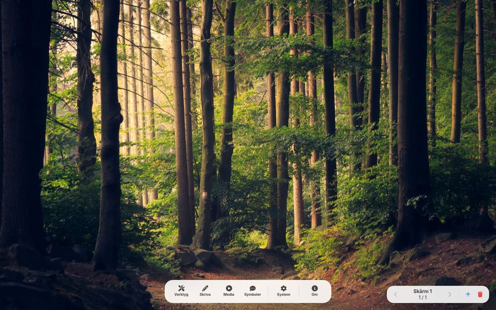
- Nedre mitten: Huvudmenyn med alla verktyg
- Nedre höger: Skärmnavigering (för att växla mellan olika sidor)
Steg 3: Lägg till ditt första verktyg
- Klicka på Verktyg i huvudmenyn
- Välj till exempel Klocka
- Verktyget visas på skärmen och kan flyttas och anpassas
2. Översikt av gränssnittet
Huvudmenyn
Huvudmenyn innehåller sex kategorier:
| Meny | Syfte |
|---|---|
| Verktyg | Tid, ljud, slumpning och tärningar |
| Skriva | Text, att-göra-listor och schema |
| Media | Bilder, video, PDF, Spotify och YouTube |
| Symboler | Visuella instruktioner och bildstöd |
| System | Bakgrund, helskärm, spara och ladda |
| Om | Information om appen |
Skärmnavigering
Längst ner till höger hittar du kontroller för att hantera flera skärmar (sidor):
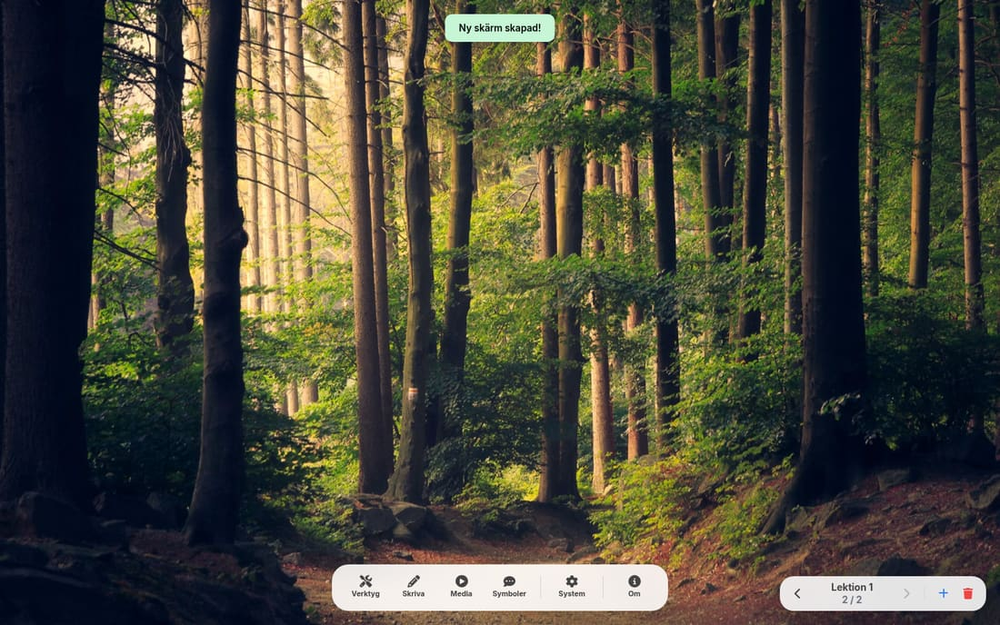
| Knapp | Funktion |
|---|---|
| ◀ ▶ | Växla mellan skärmar |
| Namnfält | Ge skärmen ett namn (t.ex. "Lektion 1") |
| 1 / 2 | Visar vilken skärm du är på |
| + | Skapa en ny skärm |
| 🗑 | Ta bort aktuell skärm |
3. Menyerna
Klicka på en menyknapp för att öppna dess undermeny. Klicka utanför menyn eller välj ett alternativ för att stänga den.
Verktyg
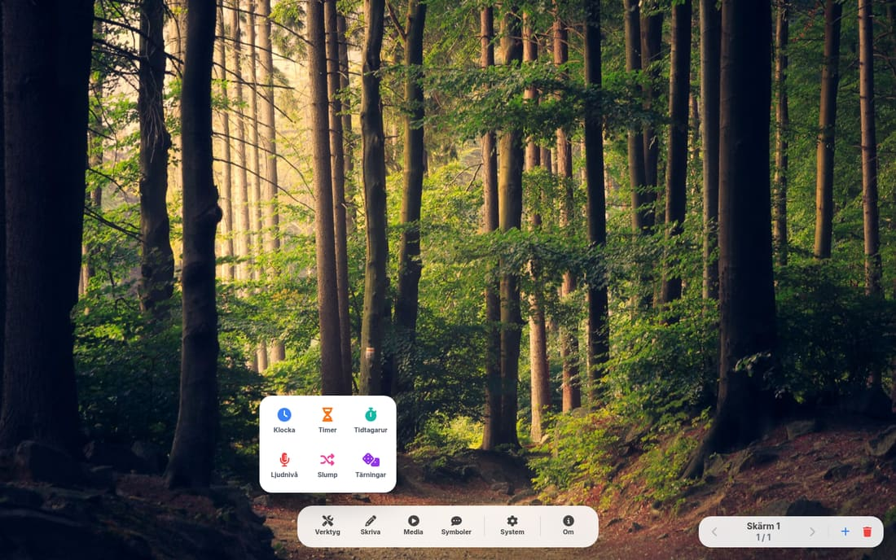
| Verktyg | Beskrivning |
|---|---|
| Klocka | Digital eller analog klocka |
| Timer | Nedräkningstimer med visuell cirkel |
| Tidtagarur | Stoppur för att mäta tid |
| Ljudnivå | Visar klassrummets ljudnivå via mikrofon |
| Slump | Slumpar elevnummer eller skapar grupper |
| Tärningar | Virtuella tärningar (1–6 st) |
Skriva
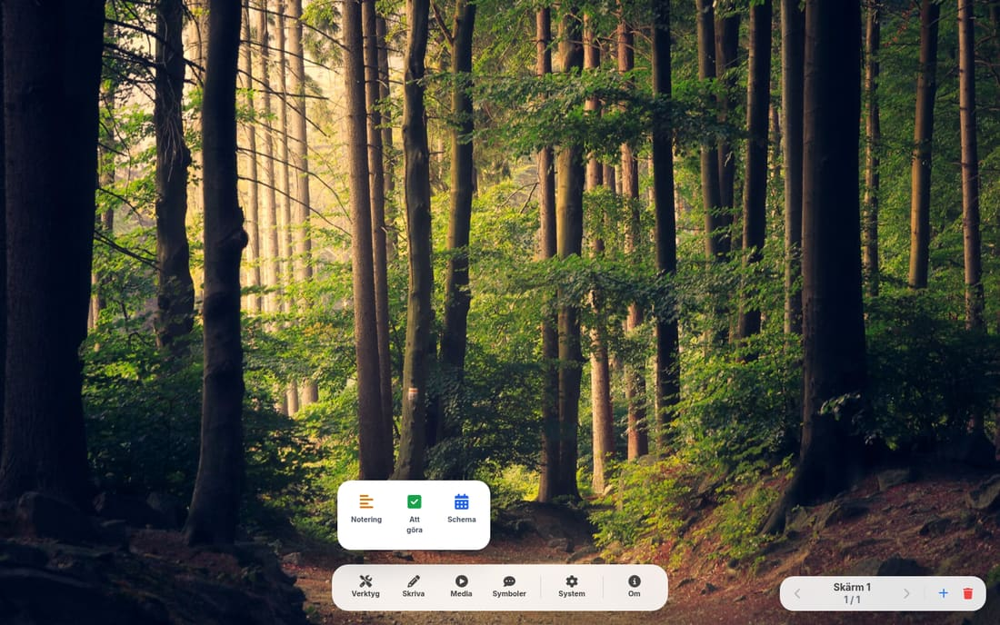
| Verktyg | Beskrivning |
|---|---|
| Notering | Textfält med formateringsverktyg |
| Att göra | Checklista för uppgifter |
| Schema | Dags- eller lektionsschema med tider |
Media
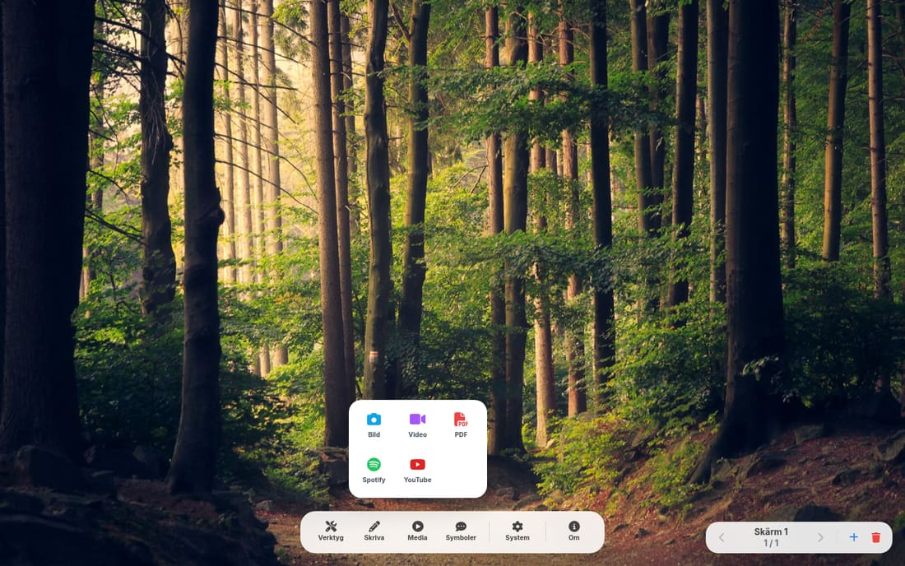
| Verktyg | Beskrivning |
|---|---|
| Bild | Visa en bild från din dator |
| Video | Spela upp en videofil |
| Visa ett PDF-dokument | |
| Spotify | Bädda in musik från Spotify |
| YouTube | Bädda in en YouTube-video |
Symboler
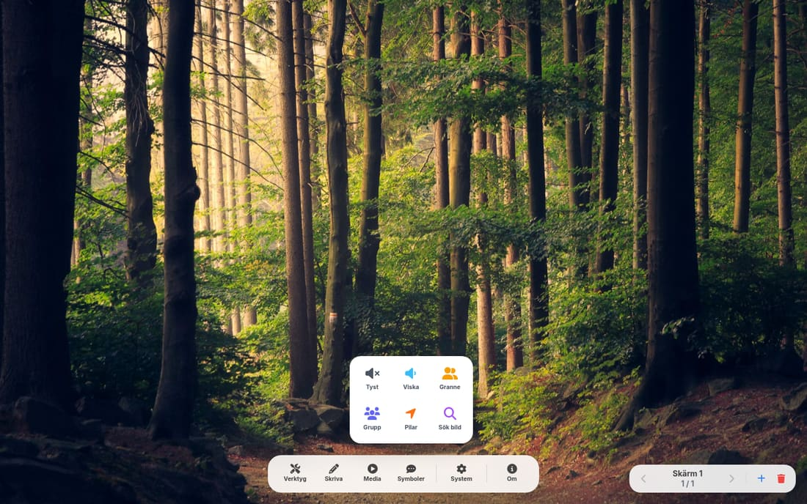
| Verktyg | Beskrivning |
|---|---|
| Tyst | Symbol för tyst arbete |
| Viska | Symbol för viskning |
| Granne | Symbol för att prata med granne |
| Grupp | Symbol för grupparbete |
| Pilar | Riktade pilar för att peka ut saker |
| Sök bild | Sök bildstöd från ARASAAC |
System
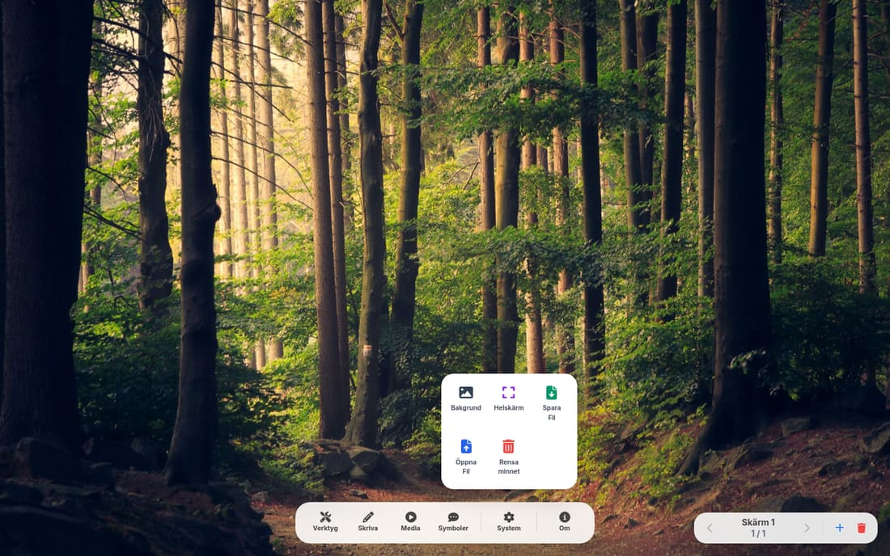
| Funktion | Beskrivning |
|---|---|
| Bakgrund | Ändra bakgrundsbild eller färg |
| Helskärm | Visa appen i helskärmsläge |
| Spara Fil | Exportera din layout till en fil |
| Öppna Fil | Importera en sparad layout |
| Rensa minnet | Radera allt och börja om från början |
Om
Klicka på Om för att se information om appen, vem som skapat den och användarvillkor.
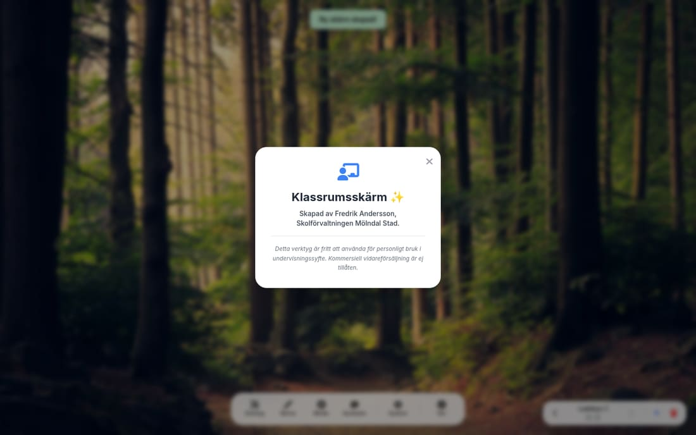
4. Hantera verktyg (widgets)
Varje verktyg du lägger till kallas ett widget. Alla widgets kan flyttas, ändras i storlek och anpassas.
Markera ett verktyg
Klicka på ett verktyg för att markera det. En blå ram visas runt verktyget och en verktygsrad dyker upp ovanför.
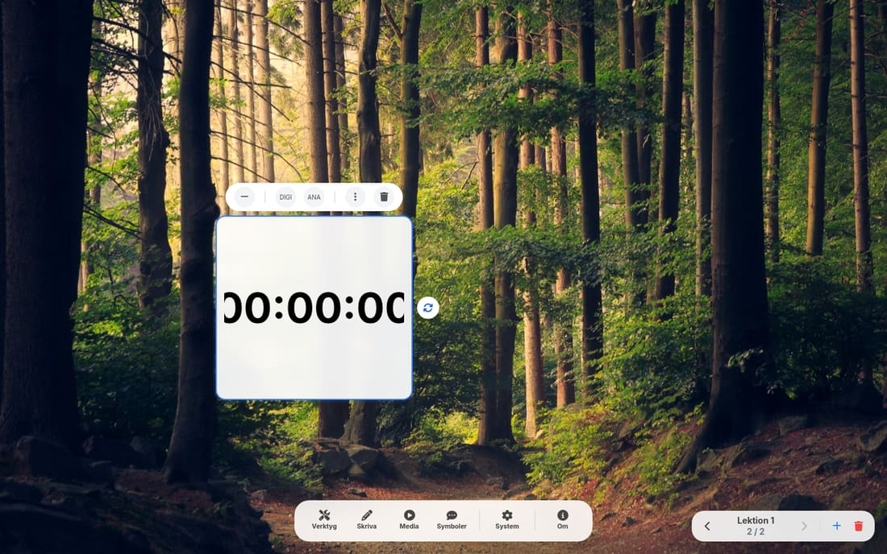
Verktygsradens knappar
| Knapp | Funktion |
|---|---|
| − | Fäll in verktyget (visar bara en liten ikon) |
| ⋮ | Öppna stilmeny – välj bakgrundsfärg |
| 🗑 | Ta bort verktyget |
| ↻ (blå cirkel) | Rotera verktyget fritt |
Vissa verktyg har extra knappar i verktygsraden, till exempel:
- Klocka: DIGI / ANA – växla mellan digital och analog visning
- Notering: Pil uppåt – dölj/visa textverktygsraden
- Pil: Form, animation och färgval
Flytta ett verktyg
- Klicka på verktyget för att markera det
- Dra verktyget till önskad position
- Släpp musknappen
Ändra storlek
- Markera verktyget
- Dra i kanterna eller hörnen (små osynliga handtag runt verktyget)
- Släpp när storleken är lagom
Rotera
- Markera verktyget
- Dra i den blå cirkeln med uppdateringsikonen (↻) till höger om verktyget
- Släpp när vinkeln är rätt
Ändra bakgrundsfärg på verktyget
- Markera verktyget
- Klicka på ⋮ (tre prickar) i verktygsraden
- Välj en färg – eller transparent för att bara visa innehållet
Exempel på en färdig layout
Här är ett exempel på hur flera verktyg kan kombineras på en skärm:
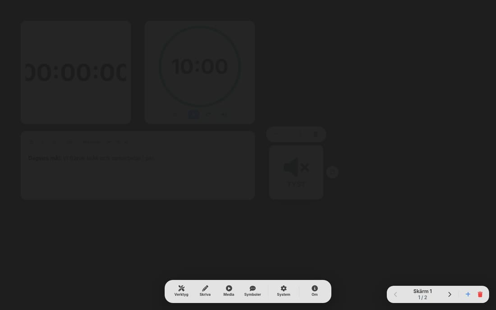
5. Verktyg – detaljerad guide
Klocka
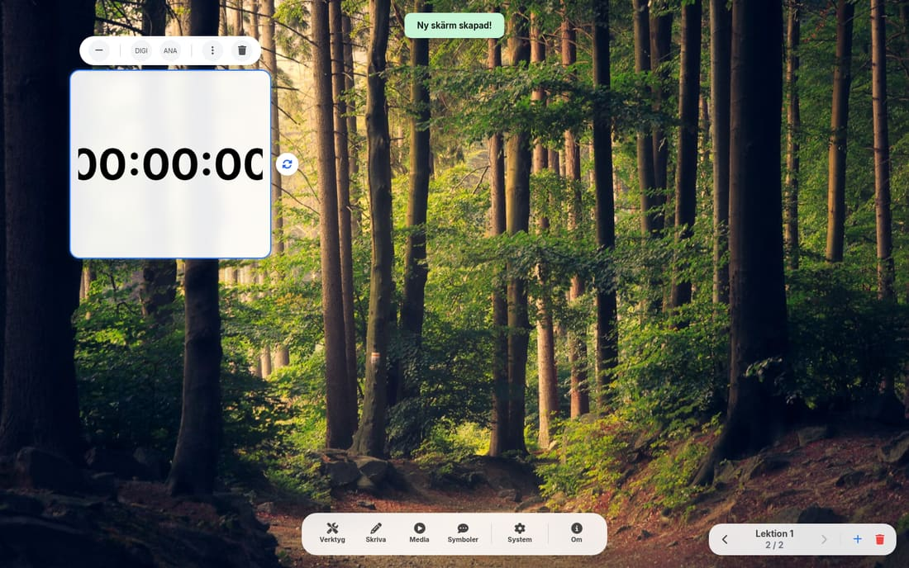
Användning: Visa aktuell tid för eleverna.
Så här gör du:
- Verktyg → Klocka
- Klockan visas i digitalt läge (00:00:00)
- Klicka ANA i verktygsraden för analog klocka
- Klicka DIGI för att gå tillbaka till digital visning
Tips: Använd den analoga klockan när eleverna ska öva tid.
Timer
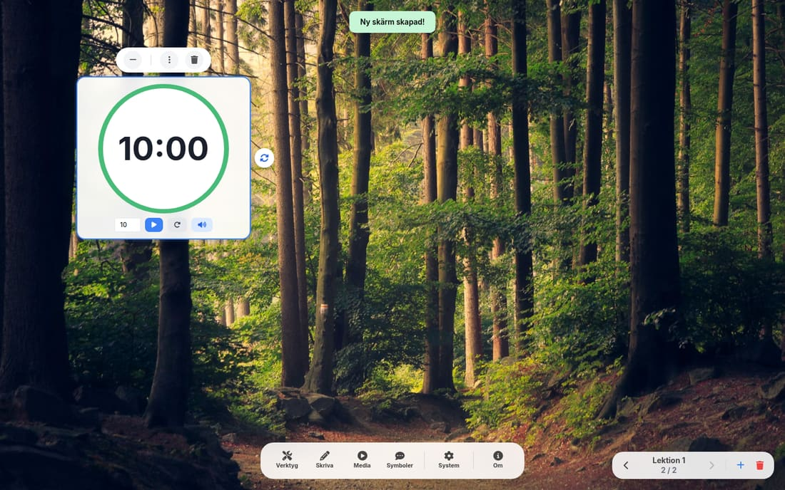
Användning: Nedräkning för aktiviteter, stationer eller raster.
Så här gör du:
- Verktyg → Timer
- Skriv in antal minuter i rutan (t.ex.
10) - Klicka ▶ (play) för att starta
- Klicka ↺ (återställ) för att börja om
- Klicka 🔊 för att slå på/av ljudsignal när tiden är ute
Den gröna cirkeln krymper allteftersom tiden går.
Tips: Sätt timern på 5 minuter vid grupparbete så att eleverna ser hur mycket tid som återstår.
Tidtagarur
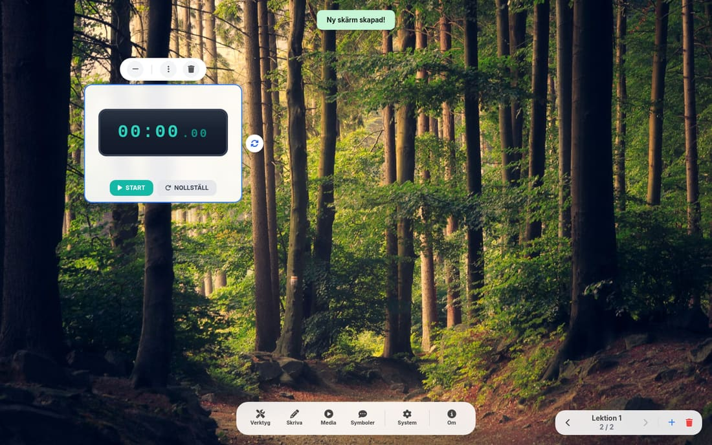
Användning: Mäta hur lång tid något tar.
Så här gör du:
- Verktyg → Tidtagarur
- Klicka START för att börja mäta
- Klicka igen för att pausa
- Klicka NOLLSTÄLL för att återställa till 00:00
Ljudnivå
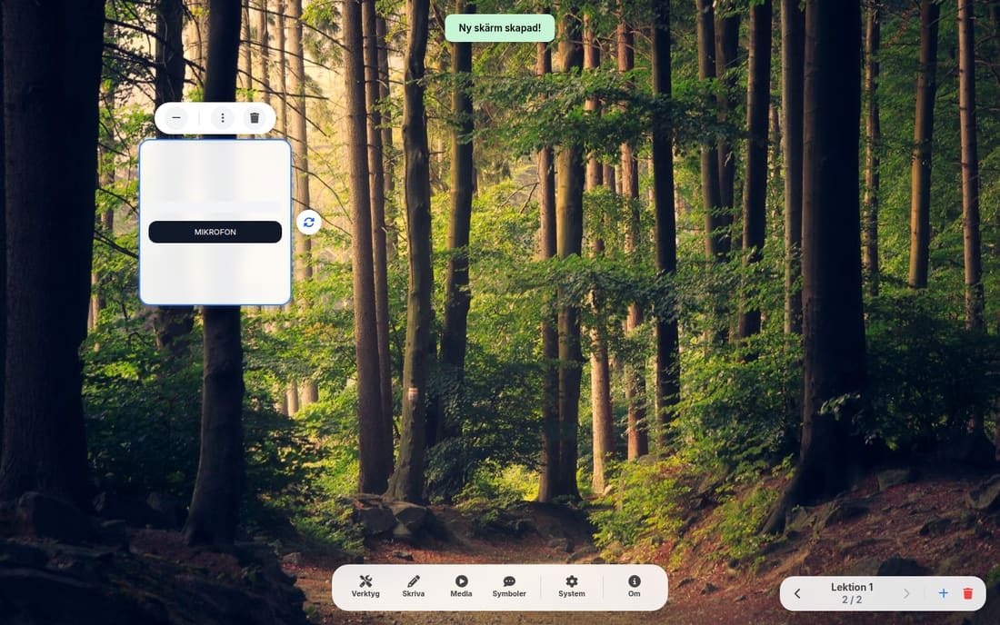
Användning: Visa klassrummets ljudnivå visuellt – bra för att träna eleverna i att hålla lagom volym.
Så här gör du:
- Verktyg → Ljudnivå
- Klicka MIKROFON
- Webbläsaren frågar om tillåtelse – klicka Tillåt
- En färgad stapel visar ljudnivån (grönt = tyst, rött = högt)
Tips: Placera widgeten synligt och utmana klassen: "Kan vi hålla stapeln grön?"
Slump (elevslumpare)
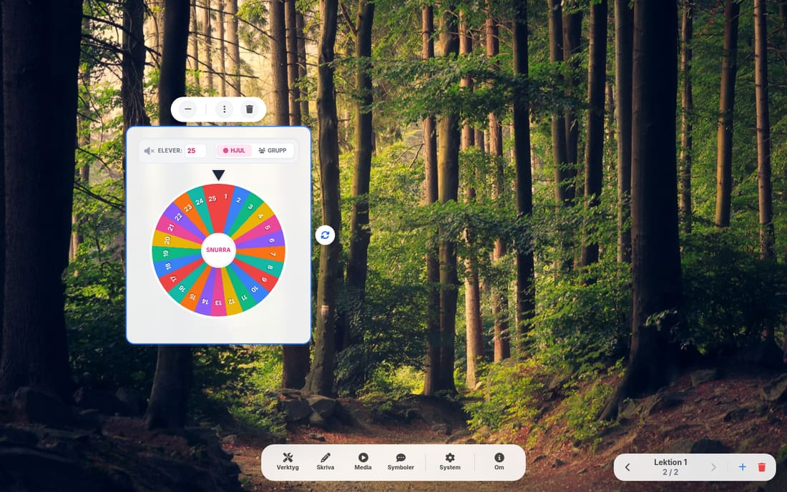
Användning: Slumpa fram elevnummer eller skapa slumpmässiga grupper.
Så här gör du – Hjul-läge:
- Verktyg → Slump
- Ange antal elever i fältet ELEVER (t.ex.
25) - Klicka SNURRA i mitten av hjulet
- Hjulet snurrar och stannar på ett nummer
Så här gör du – Grupp-läge:
- Klicka GRUPP högst upp i widgeten
- Ange GRUPPSTORLEK (t.ex.
4) - Klicka SKAPA
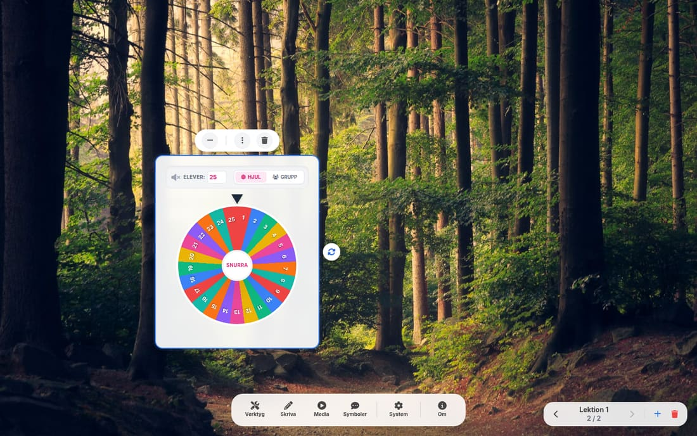
Tips: Slå på ljudet med högtalarikonen om du vill ha ljudeffekt vid snurrning.
Tärningar
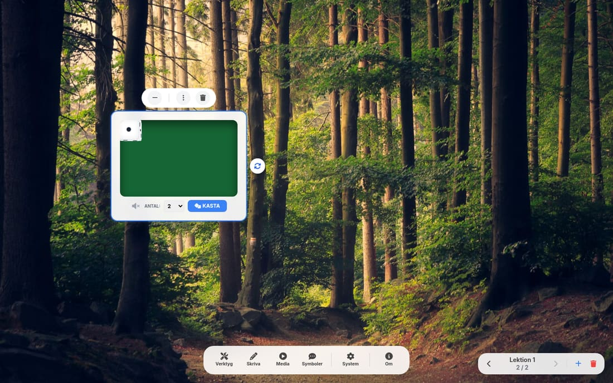
Användning: Slumpa tal i matematiklektionen eller spel.
Så här gör du:
- Verktyg → Tärningar
- Välj antal tärningar (1–6) i rullgardinsmenyn
- Klicka KASTA eller klicka direkt på tärningsytan
- Tärningarna rullar och visar nya värden
6. Skriva – detaljerad guide
Notering
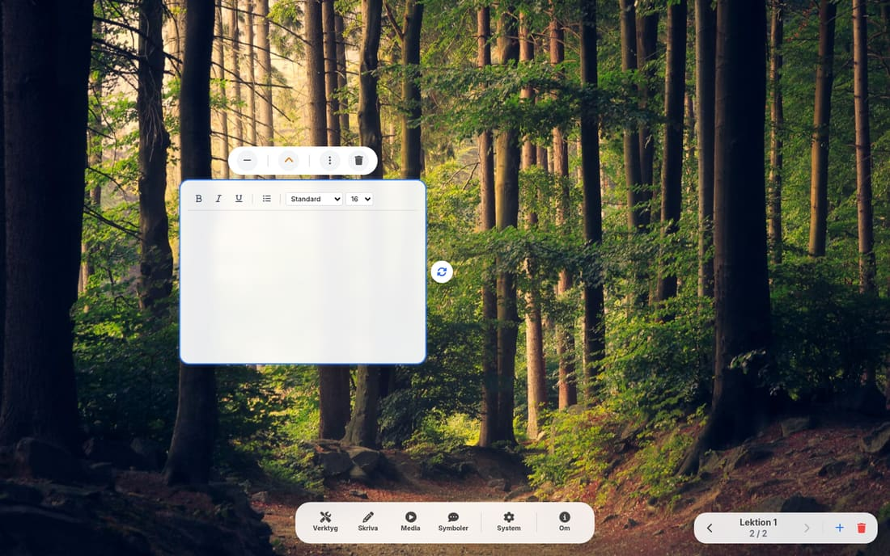
Användning: Skriv instruktioner, mål eller meddelanden till klassen.
Så här gör du:
- Skriva → Notering
- Klicka i textfältet och skriv
- Använd verktygsraden för formatering:
- B = fetstil
- I = kursiv
- U = understruken
- Punktlista
- Teckensnitt och storlek
Tips: Skriv "Dagens mål:" i fetstil och placera widgeten högst upp på skärmen.
Att göra
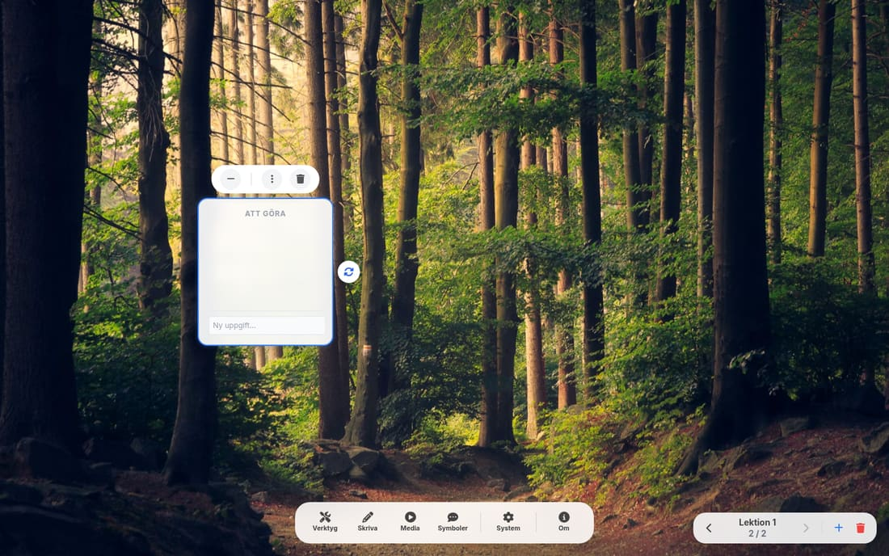
Användning: Checklista som eleverna kan följa under lektionen.
Så här gör du:
- Skriva → Att göra
- Skriv en uppgift i textfältet längst ner
- Tryck Enter eller klicka +
- Klicka på en uppgift för att markera den som klar (bockas av)
Schema
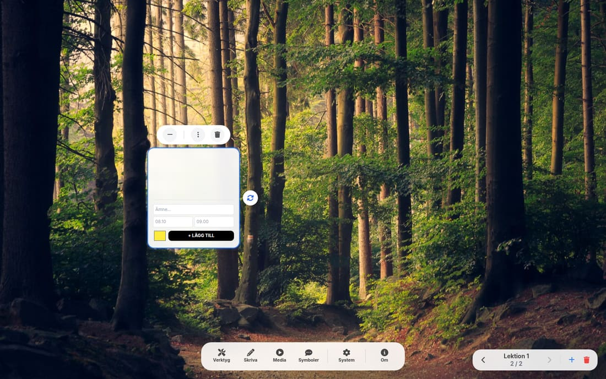
Användning: Visa dagens eller lektionens schema med tider.
Så här gör du:
- Skriva → Schema
- Fyll i Ämne (t.ex. "Matematik")
- Ange starttid och sluttid (t.ex.
08.10och09.00) - Välj en färg med färgväljaren
- Klicka + LÄGG TILL
- Upprepa för fler lektioner
Varje tillagd lektion visas i en färgkodad rad ovanför.
7. Media – detaljerad guide
Bild
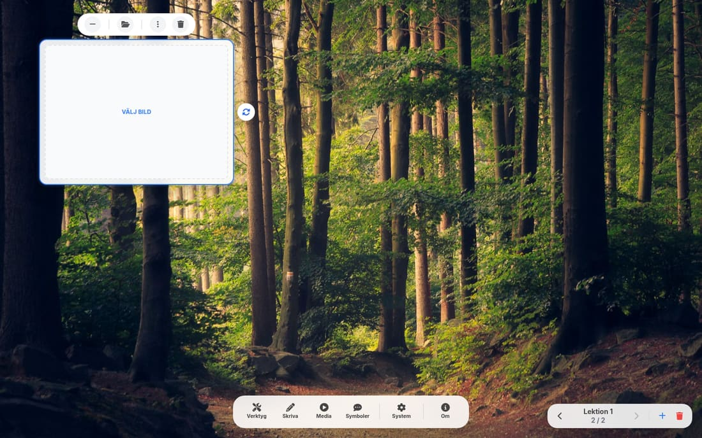
- Media → Bild
- Klicka VÄLJ BILD
- Välj en bildfil från din dator
- Bilden visas i widgeten – ändra storlek efter behov
Video
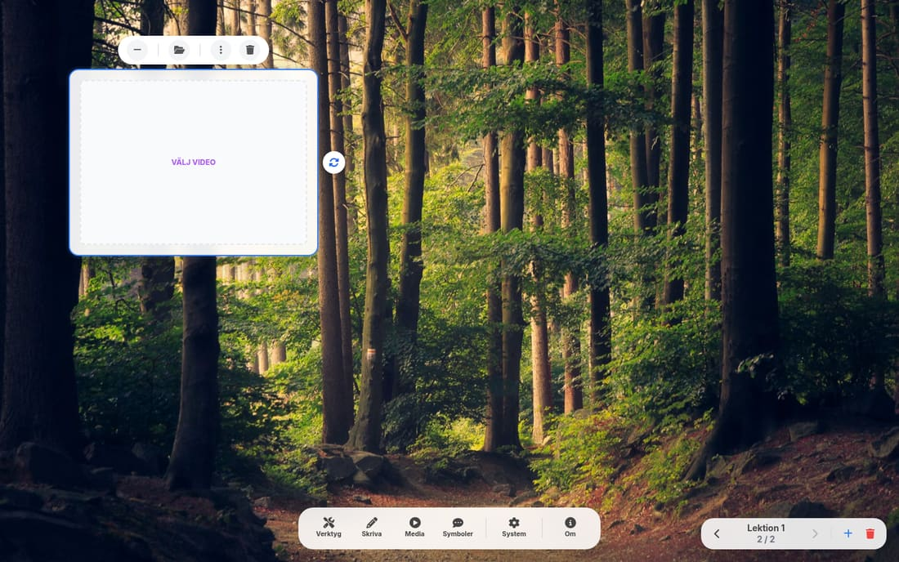
- Media → Video
- Klicka VÄLJ VIDEO
- Välj en videofil från din dator
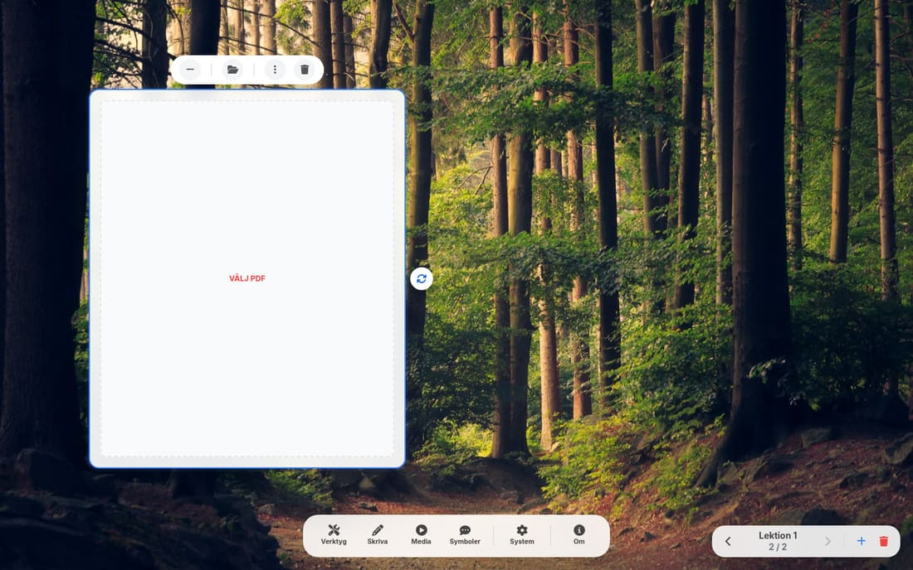
- Media → PDF
- Klicka VÄLJ PDF
- Välj en PDF-fil – den visas direkt i widgeten
Spotify
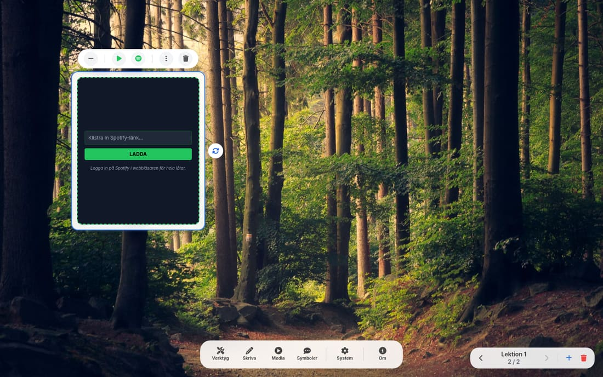
- Media → Spotify
- Kopiera en Spotify-länk (låt, album eller spellista)
- Klistra in länken och klicka LADDA
- Använd play-knappen i verktygsraden för att styra uppspelningen
Obs: Du behöver vara inloggad på Spotify i webbläsaren för att spela hela låtar.
YouTube
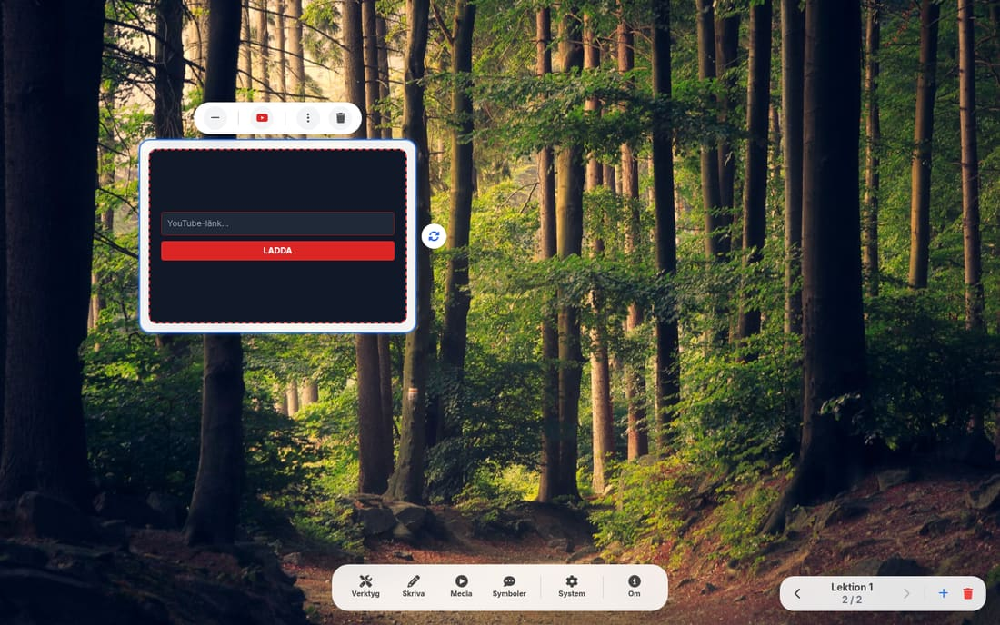
- Media → YouTube
- Klistra in en YouTube-länk
- Klicka LADDA
- Videon visas i widgeten
8. Symboler – detaljerad guide
Symboler hjälper dig att ge tydliga, visuella instruktioner till klassen utan att behöva säga något.
Färdiga symbolspråk
| Symbol | Betydelse | Bild |
|---|---|---|
| Tyst | Eleverna ska vara helt tysta | 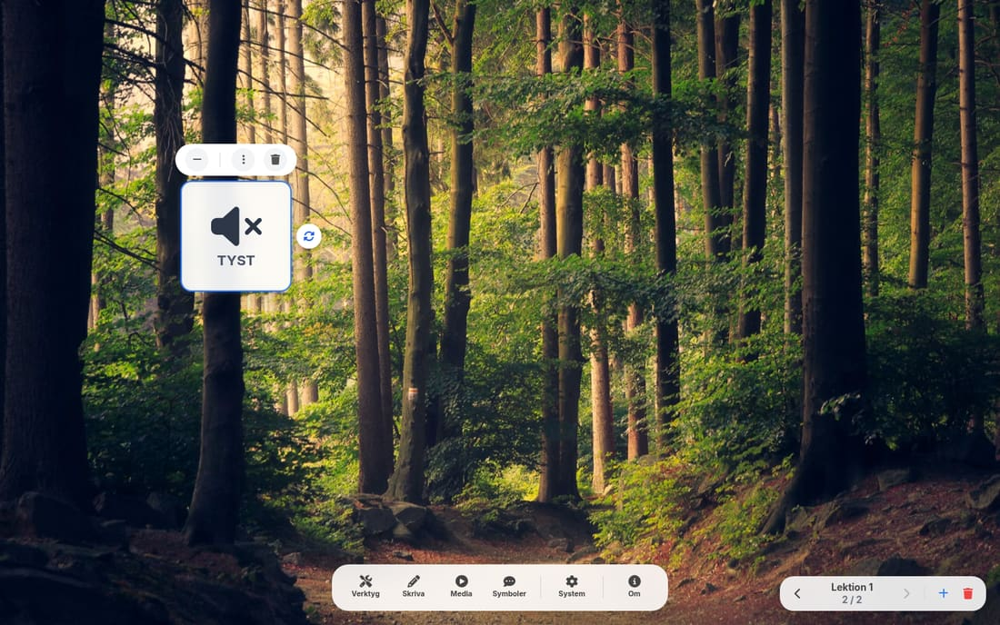 |
| Viska | Eleverna får viska | (se menyn Symboler) |
| Granne | Prata med personen bredvid | (se menyn Symboler) |
| Grupp | Arbeta i grupp | (se menyn Symboler) |
Så här gör du:
- Symboler → välj symbol
- Placera symbolen synligt på skärmen
- Byt symbol när aktiviteten ändras
Pilar
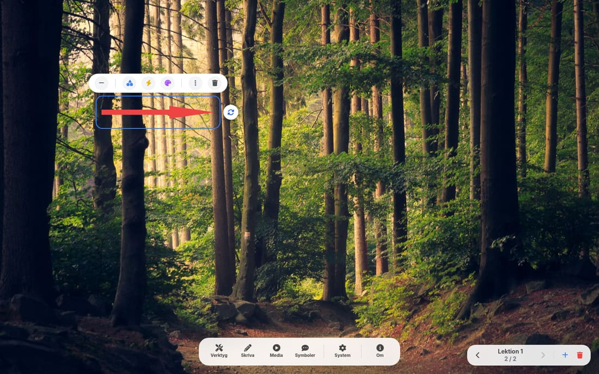
Användning: Peka ut saker på skärmen, tavlan eller i rummet.
Så här gör du:
- Symboler → Pilar
- Använd verktygsraden för att:
- Byta form (flera pilvarianter)
- Slå på animation (pulserande effekt)
- Välja färg
Sök bild (ARASAAC)
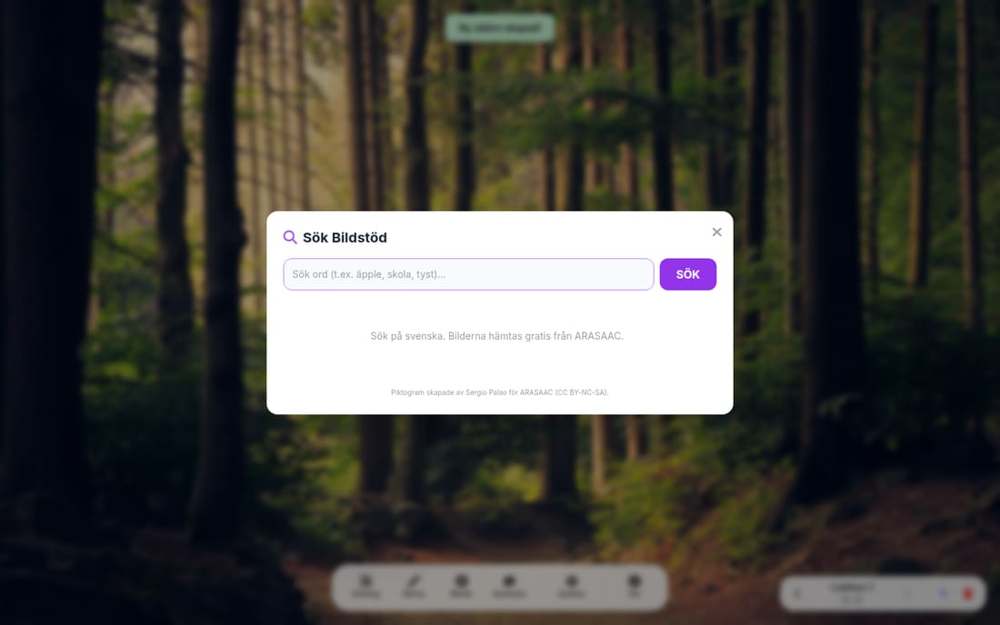
Användning: Hitta och lägga till bildstöd (piktogram) från ARASAAC – gratis material för kommunikation och bildstöd.
Så här gör du:
- Symboler → Sök bild
- Skriv ett sökord på svenska (t.ex. "äpple", "skola", "tyst")
- Klicka SÖK
- Klicka på en bild för att lägga till den på skärmen
9. System – detaljerad guide
Bakgrund
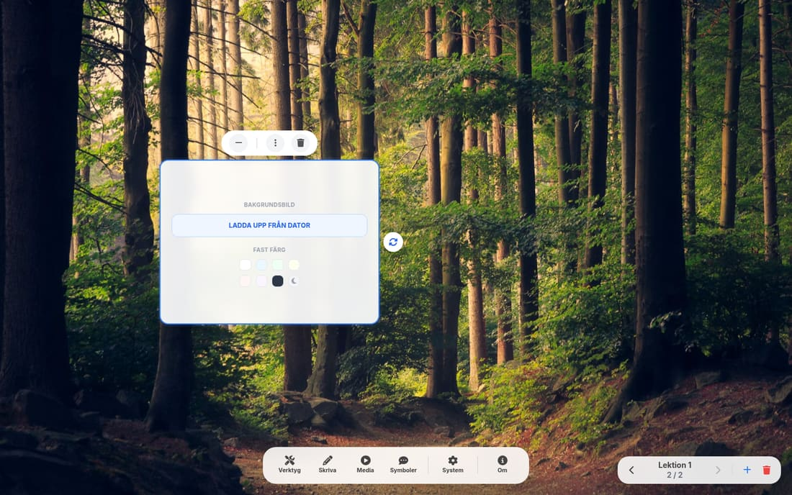
Så här gör du:
- System → Bakgrund (eller lägg till Bakgrund-widgeten)
- Välj antingen:
- LADDA UPP FRÅN DATOR – egen bakgrundsbild
- Fast färg – klicka på en färgruta
Bakgrunden gäller för den aktuella skärmen.
Helskärm
- System → Helskärm
- Appen fyller hela skärmen
- Menyerna döljs – för musen till skärmens nederkant för att visa dem igen
- Tryck Esc eller klicka Helskärm igen för att avsluta
Spara och öppna fil
Se avsnitt 11. Spara och återanvända.
Rensa minnet
- System → Rensa minnet
- Bekräfta i dialogrutan
- Allt raderas och appen laddas om
Varning: Detta går inte att ångra. Spara din layout till fil först om du vill behålla den.
10. Flera skärmar
Du kan skapa flera skärmar (sidor) – till exempel en skärm per lektionsmoment.
Skapa en ny skärm
- Klicka på + i skärmnavigeringen (nere till höger)
- En ny tom skärm skapas
- Ge skärmen ett namn i namnfältet (t.ex. "Intro", "Grupparbete", "Avslutning")
Växla mellan skärmar
- Klicka ◀ eller ▶ i skärmnavigeringen
- Varje skärm har sina egna verktyg och bakgrund
Ta bort en skärm
- Navigera till skärmen du vill ta bort
- Klicka på 🗑 i skärmnavigeringen
- Bekräfta i dialogrutan
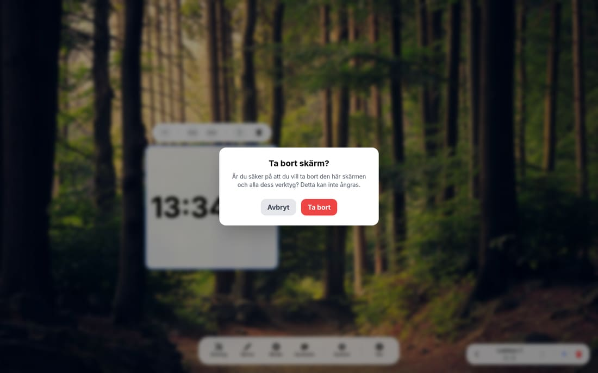
Obs: Du kan inte ta bort den sista skärmen.
11. Spara och återanvända
Appen sparar automatiskt ditt arbete i webbläsarens minne (localStorage). När du öppnar appen igen i samma webbläsare finns dina skärmar kvar.
Spara till fil (rekommenderas)
För att säkert spara och kunna använda layouten på en annan dator:
- System → Spara Fil
- En JSON-fil laddas ner till din dator (t.ex.
layout-2026-06-15.json) - Döp filen tydligt, t.ex.
Matematik-år-5.json
Öppna sparad fil
- System → Öppna Fil
- Välj din sparade JSON-fil
- Hela layouten laddas – alla skärmar, verktyg och inställningar
Tips om sparning
| Situation | Rekommendation |
|---|---|
| Samma dator varje dag | Autospar räcker ofta |
| Delad dator eller flera enheter | Spara till fil regelbundet |
| Ny termin | Spara gamla layouter och skapa nya |
| Innan "Rensa minnet" | Spara alltid till fil först |
12. Tips för klassrummet
Innan lektionen
- Förbered dina skärmar – skapa en skärm per aktivitet
- Spara till fil – så du inte förlorar arbetet
- Testa mikrofonen om du ska använda Ljudnivå
- Kontrollera helskärmsläge på projektorn
Under lektionen
- Använd symboler (Tyst, Viska, Grupp) istället för att upprepa instruktioner
- Placera timern synligt under stationer eller skrivövningar
- Använd slump-hjulet för att välja elever rättvist
- Fäll in verktyg du inte behöver just nu (knappen −)
Efter lektionen
- Spara layouten om du vill återanvända den
- Eller rensa och förbered inför nästa klass
Kortkommandon och beteenden
| Åtgärd | Hur |
|---|---|
| Dölj menyer i helskärm | Menyerna visas när du för musen till skärmens nederkant |
| Avmarkera verktyg | Klicka på en tom yta på bakgrunden |
| Stäng undermeny | Klicka utanför menyn |
| Varning vid stängning | Appen varnar om du har osparade ändringar (ej exporterade till fil) |
Snabbreferens
STARTA APPEN
└─ Öppna index.html i webbläsaren
LÄGG TILL VERKTYG
└─ Klicka meny (Verktyg/Skriva/Media/Symboler) → Välj verktyg
ANPASSA VERKTYG
└─ Klicka verktyg → Dra / Ändra storlek / Rotera / Verktygsrad
FLERA SKÄRMAR
└─ + (skapa) | ◀ ▶ (växla) | 🗑 (ta bort)
SPARA
└─ System → Spara Fil
LADDA
└─ System → Öppna Fil
Klassrumsskärm är skapad av Fredrik Andersson, Skolförvaltningen Mölndal Stad. Verktyget är fritt att använda för personligt bruk i undervisningssyfte.